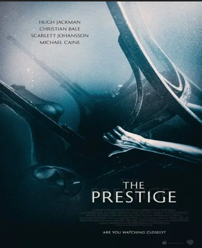

Le Prestige (2006)
Réalisateur : Christopher Nolan
Résumé court
Deux magiciens rivaux s'engagent dans une lutte obsessionnelle pour percer le secret de l'autre.
Critique
Thriller cérébral magistral ! Twists multiples, mise en scène virtuose et fin qui retourne le cerveau. Nolan au sommet.
Synopsis détaillé
À la fin du XIXe siècle à Londres, Robert Angier et Alfred Borden, assistants d'un magicien, deviennent rivaux après un tragique accident de scène qui coûte la vie à la femme d'Angier. Obsédés par le tour "Transféré Homme" de l'autre (téléportation instantanée), chacun espionne, sabote et vole les secrets de l'autre dans une escalade de duplicité. Leur quête les mène à Nikola Tesla aux États-Unis, qui détient la clé de la rivalité : une machine défiant les lois de la physique.
Casting principal
- Hugh Jackman : Robert Angier
- Christian Bale : Alfred Borden
- Scarlett Johansson : Olivia Wenscombe
- Michael Caine : Cutter
Fiche technique
- Genre : Thriller, Drame, Science-fiction
- Réalisateur : Christopher Nolan
- Producteurs : Christopher Nolan, Emma Thomas
- Durée : 2h10